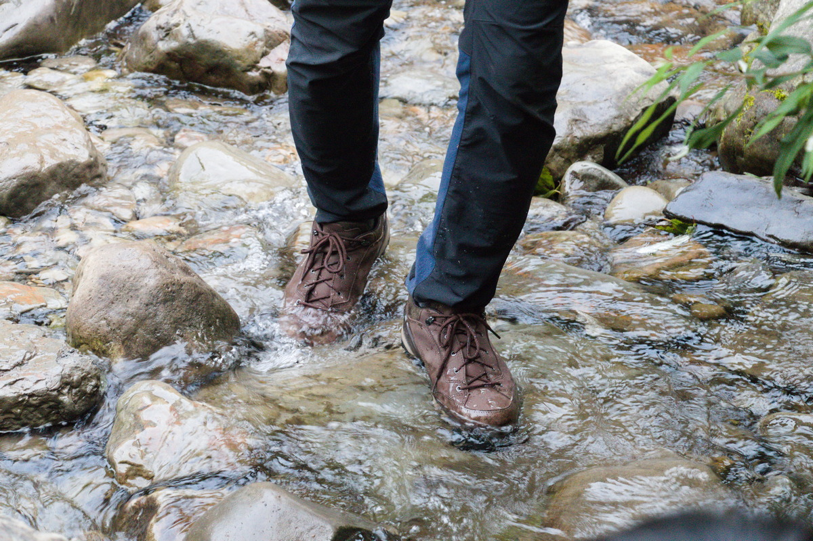
▲ 潮到 出水 防水的 LOWA RENEGADE GTX LO WIDE
LOWA RENEGADE GTX LO WIDE（以下簡稱為「Renegade Lo W」）就是這樣一雙讓人錯亂的鞋子吶……。（嘆氣）
說到 LOWA（不是光學品牌「LAOWA」唷），想必許多人並不陌生，它是德國知名的戶外用鞋品牌，產品以舒適和耐用為人所知。從 1923 年在巴伐利亞 Jetzendorf 小鎮創立以來，至今已有近百年的專業製鞋經驗，擁有多項獨步全球的專利技術，更是屢屢榮獲各國設計獎之殊榮，可謂口碑十足的經典老牌。
雖然已經是 LKK 的傳統產業，但 LOWA 的思想可一點都不落伍，它們秉持著「always one step ahead」的經營理念以及「simply more」的極致工藝精神，長年屹立在世界潮流尖端。
今天要介紹的這雙 RENEGADE 低筒寬楦健行鞋，可以說是 LOWA 極致工藝的代表作。RENEGADE 長期作為 LOWA 最暢銷的系列鞋款，從裡到外都無可挑剔，鞋面由極具質感的絨面革（按：絨面革常被泛稱為「麂皮」，此鞋款使用 Nubuck 牛皮革）搭配織布縫製而成，內層搭載 GORE-TEX 防水透氣薄膜，並且使用 Vibram® 橡膠黃金大底，加上自家專利技術 DynaPU® 射出中底與 Monowrap® 框架，當代新科技可說是幾乎用上了。
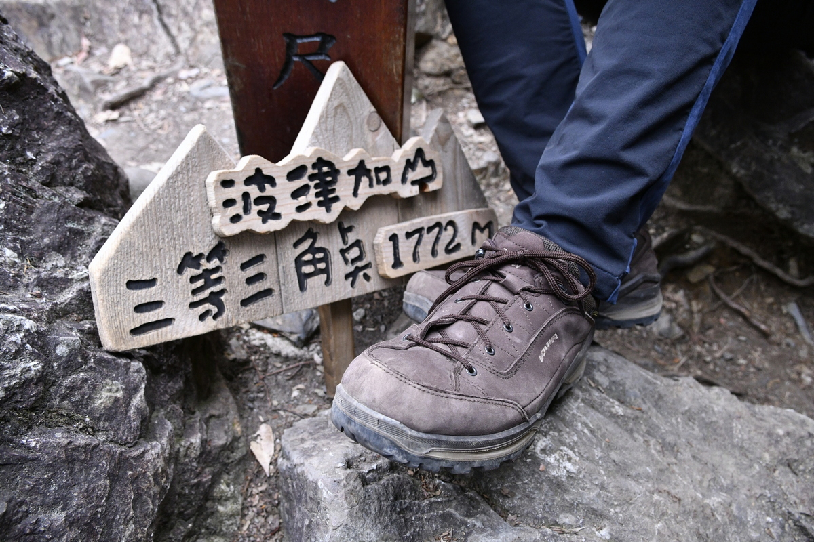
▲ Renegade Lo W 精美的絨面革鞋面
現今許多登山鞋都有寬楦設計的版本，這是為了適應亞洲人的腳型與穿著習慣，同一雙鞋有正常版與寬楦版也是 LOWA 的特色之一。
本文以銀河洞、波津加山、加里山與武陵四秀這四條難度不一的熱門路線為依據，深入解析 Renegade Lo W 的性能，希望能夠讓讀者更了解這雙鞋的優缺點，以及適合穿著這雙鞋的場合。
【科技介紹與實戰體驗】
Vibram® Evo Trac 黃金大底
Vibram® 俗稱「V 底」，或是更多人稱呼它為「黃金大底」，它的知名度相當高，高到許多山友看到黃金大底總不免驚呼幾聲，穿著配備黃金大底的鞋款上山，有如開法拉利上街一樣高調，時刻引人注目。
黃金大底是一個口碑，也是一種迷思，許多人以為穿上黃金大底，可以無往不利，走路永遠不會打滑，但其實這個世界上沒有完美之物，再好的裝備只要用錯地方，照樣無用武之地。愛因斯坦曾說：「如果你讓一條魚去爬樹，他一定以為自己是智障。」穿鞋也是同樣的道理。
黃金大底跟人一樣形形色色，不同種類的黃金大底適合在不同的地形與情境發揮，如果想知道黃金大底有哪些類別，可以參考這個網站，裡頭列出所有黃金大底以及他們的特色。
Renegade Lo W 所配備的大底是 Vibram® Evo Trac，這款黃金大底採用板齒設計，最適合行走以泥土、腐植層與碎石為主的原始山徑，在這種地形上頭，即使潮濕甚至泥濘，也絲毫難不倒這雙鞋。Vibram® Evo Trac 的硬度在健行鞋中屬於中等偏高，在提升抓地力與穩定性的同時，避震性能也維持有一定水準，能夠兼顧穿著的舒適感，因此可以應付較為多元的路面環境。Vibram® Evo Trac 在乾燥的岩石面也擁有不錯的表現，不過在潮溼的樹根與石階上的表現就不是那麼理想，因此許多鋪設花崗岩石階的親山步道反而不適合穿著 Renegade Lo W 前往。
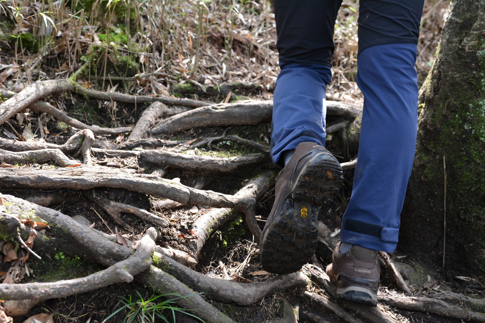
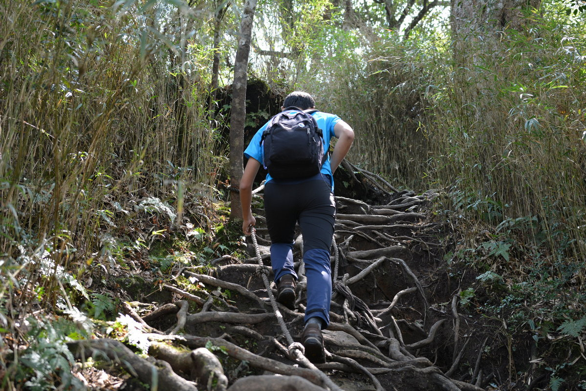
▲ 穿著 Renegade Lo W 走乾樹根完全沒問題
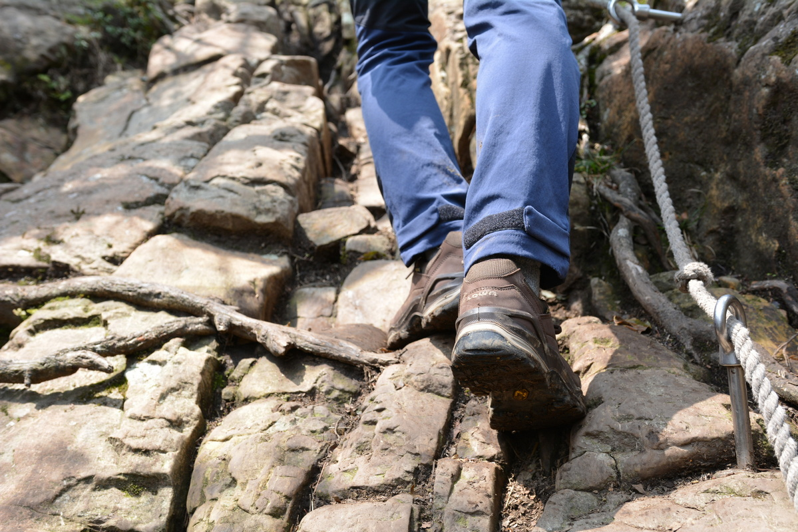
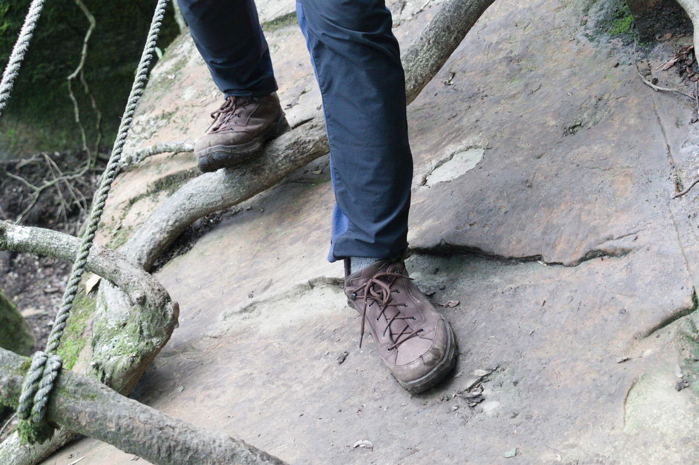
▲ 穿著 Renegade Lo W 攀爬乾燥岩石也非常可以
以銀河洞為例，從樟湖步道往銀河洞的路段以枕木和石塊為主，由於造訪當天正逢梅雨襲擊，整路都濕滑不堪，在這樣的情況下，雖然枕木容易打滑，但因為通常伴隨碎石鋪設，所以對於 Renegade Lo W 來說還算游刃有餘。然而在回程走樟湖步道往貓空的時候，有許多平坦的石階，這段對於一般民眾而言最好走的路段，對於 Renegade Lo W 卻反而困難許多。
在地形比較原始的波津加山，Renegade Lo W 的表現就比在銀河洞時好不少，由於這裡主要是由石塊與泥土所構成的原始山徑，因此同樣是下雨天，還可以用連走帶跑的速度在 90 分鐘內衝下山，並且只發生一次輕微打滑（同行隊友有三人都打滑多次，並且各滑倒跌坐一次）。
同樣也是遭遇下雨天的武陵四秀第二天（唉，怎麼一直遇到下雨……），可以說是這個月行程中最難爬的路段，從三叉營地到桃山山屋只有短短 2.3 公里路，卻必須在濕滑的大岩石攀上攀下，著實耗費不少精神，幸而在 Renegade Lo W 的加持下，整段路是有驚無險地通過了。
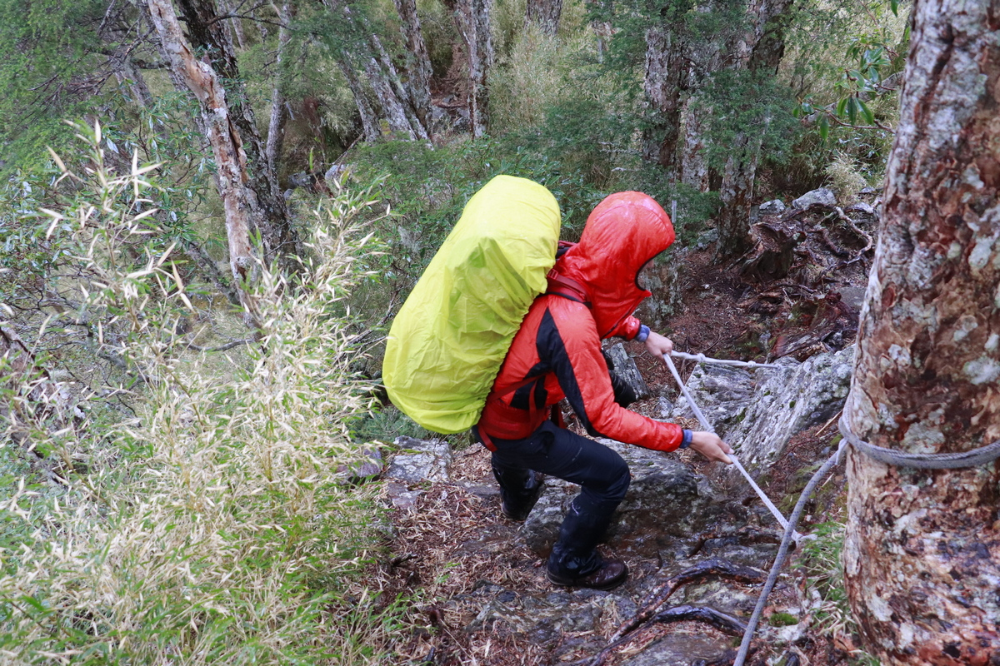
▲ 三叉營地往桃山方向，許多地方需要拉繩攀爬。
簡而言之，正如本節一開始所說，配備 Vibram® Evo Trac 的 Renegade Lo W 適合走的路面類型相當多元，在這幾趟行程下來，Renegade Lo W 對各種路面的抓地力都相當棒，唯有在樟湖步道那段平坦石階稍遇挑戰。此外，武陵四秀第三天從桃山下至武陵的路以碎石和松針地毯為主，Renegade Lo W 在這裡的抓地力更是格外優秀，讓我在重裝下坡的狀態下還能夠邊跑邊拍照，還真是超乎預期。
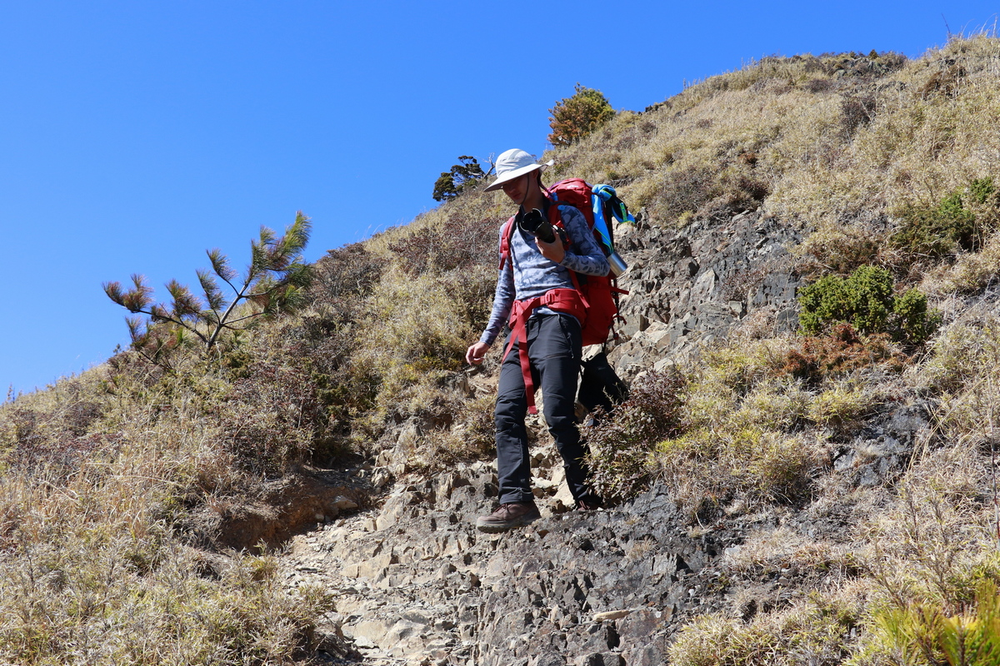
▲ 從桃山下山時的碎石坡，Renegade Lo W 在此抓地力極佳
DynaPU® 中底與 Monowrap® 框架
除了大底以外，中底對於一雙鞋而言也同樣重要，他主要的功能是避震與足底的運動防護，同時也是維持行進間舒適度的關鍵。
Renegade Lo W 所使用的中底不同於大多數登山鞋，並非使用 EVA（乙烯／醋酸乙烯酯共聚物）材質，而是使用 PU（聚氨酯）為原料。PU 的高分子結構比 EVA 來得緻密，因此重量會稍微重一些，但是比較耐重、也比較耐用，即使經過長期使用也不容易變形，避震效果也比較不會因長期使用而衰退。不過 PU 有一個最主要的問題，就是久未穿著或是處理不當的話會水解。
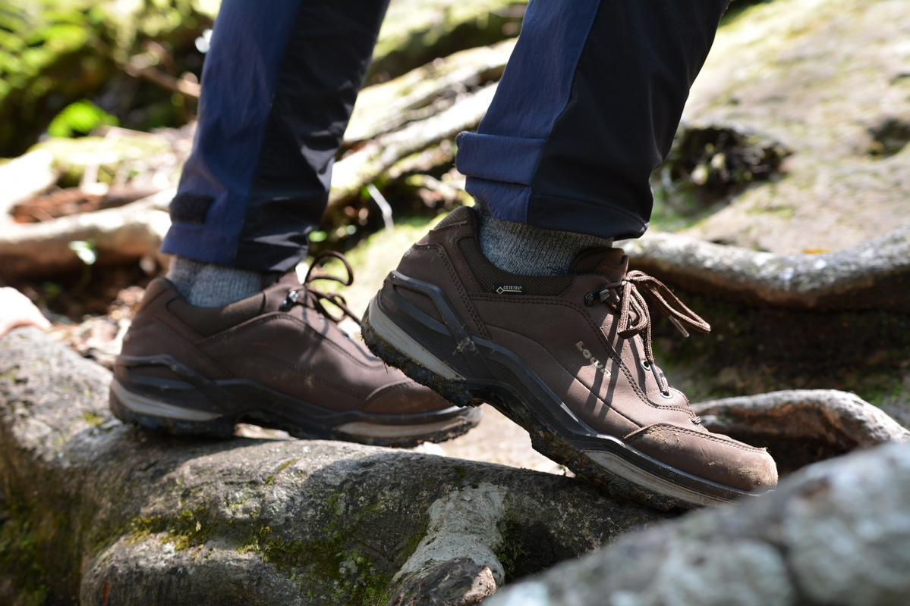
▲ Renegade Lo W 的中底結構
為了解決 PU 的水解問題，LOWA 開發出兩種改良版 PU 材料，分別稱為「DynaPU®」與「DuraPU®」。DynaPU® 名稱取自「Dynamic」，其質地較軟，具備較好的緩衝效果；而 DuraPU® 則取自「Durability」，質地較硬，兼具韌性與穩定性。Renegade Lo W 使用 DynaPU® 為中底，並且透過特殊的「雙重射出」（double injection）填充技術直接將材料注入橡膠大底上層，使得鞋底連接到鞋面形成無縫中底，減少水氣入侵發生水解現象，且能夠有效吸收行走時來自地面的衝擊力，增加縱向的穩定性。此外，中底還採用獨特的「Monowrap® Support Frame」穩定系統，讓 Renegade Lo W 擁有優異的支撐性與側向穩定性。
▲ 雙重注模填充與 Monowrap® 框架示意影片
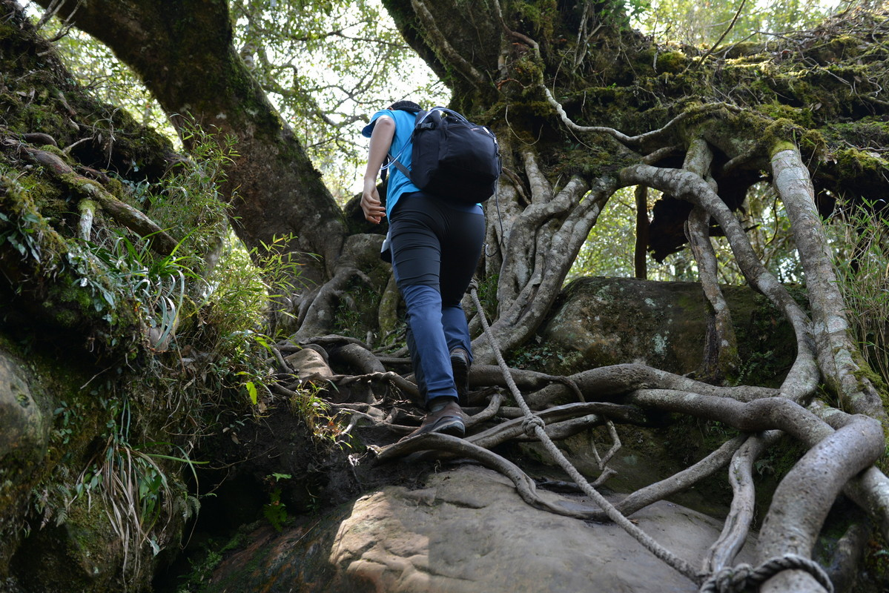
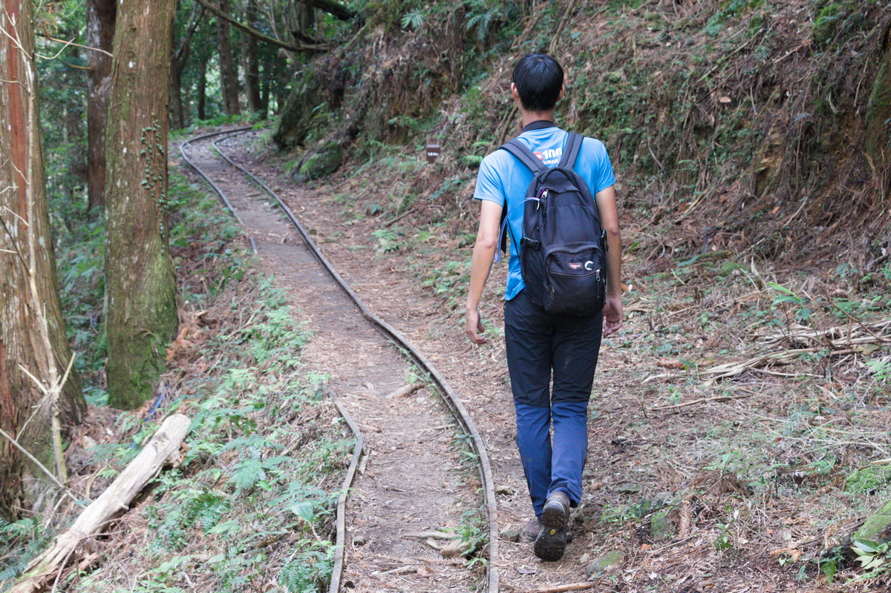
▲ 很適合地形複雜的中級山
所有的行程中，最考驗中底性能的就是重裝從桃山下至武陵農場的路段，由於足部必須承受巨大的壓力，中底的好壞就扮演非常關鍵的角色。如同上頭汽車避震器的比喻，PU 中底相較 EVA 中底更擅於支撐重量，不但安全性提高，腳底也不會因為重裝下坡而疼痛。不只腳底板，中底的支撐還連帶影響腳踝與韌帶。由於中底有效提升縱向與側向的穩定性，使得肌肉不會那麼快疲勞，進而能夠維持腳力，保護韌帶避免受傷。用簡單的話來說，就是更不容易扭到了。
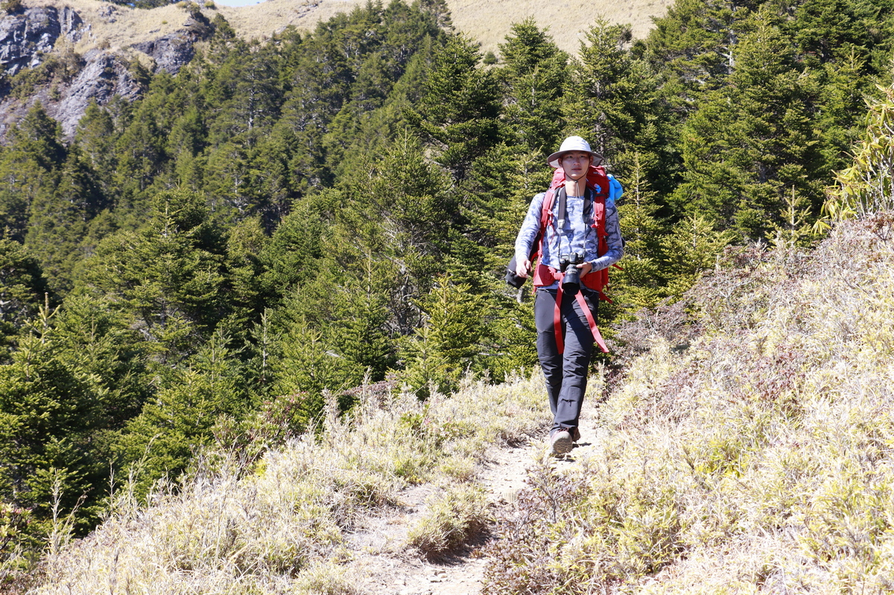
▲ 從桃山重裝下坡對於登山鞋中底真的是一大挑戰
GORE-TEX 防水透氣薄膜
最後來到防水透氣薄膜，Renegade Lo W 使用了無人不知無人不曉的 GORE-TEX。
和黃金大底一樣，GORE-TEX 是一個口碑，同時也是一種迷思。許多人以為穿上 GORE-TEX 就能夠達到完全防水透氣的效果，其實防水和透氣是兩項無法完全兼顧的性能。比起其他常見的防水透氣薄膜，GORE-TEX 在防水端的表現較佳，但是相對而言則是透氣性較低，不過 GORE-TEX 在兩者之間的拿捏對於台灣登山環境來說十分恰當，使用者的反應也因此比其他選項來得更好一些。
GORE-TEX 達到防水透氣的原理，是以微孔薄膜材料來對通過面料的物質做篩選，由於其孔徑大小大約為 280 奈米，因此可以讓水分子（直徑約 0.4 奈米）與氣味分子（數奈米至數十奈米不等）通過，卻能夠阻擋大部分雨滴（約介於 200 至 7000 奈米間）進入鞋子。換句話說，如果薄膜孔徑較大，則防水力降低、透氣性增加，反之若薄膜孔徑較小，則防水力增加、透氣性降低。
不過，別忘了雨滴也是由水分子所構成，當雨滴因為毛細現象或是壓力而碎裂、進而克服其內聚力時，仍然有機會發生滲透。根據 GORE-TEX 的技術測試，GORE-TEX 面料的防水性最高可以耐 250 公尺水壓（約 25 大氣壓），是屬於相當高的標準。
實際穿著時，就會發現 Renegade Lo W 的防水性能是無庸置疑的，整隻腳踩進水裡面泡五分鐘都不會滲水，即使在鞋面全濕且持續淋雨的狀態下行走兼攀爬三個小時也完全不是問題。可以說只要水位不要超過防水線，不要從鞋筒上方流進去的話，Renegade Lo W 在健行過程中擁有絕對防水的性能。
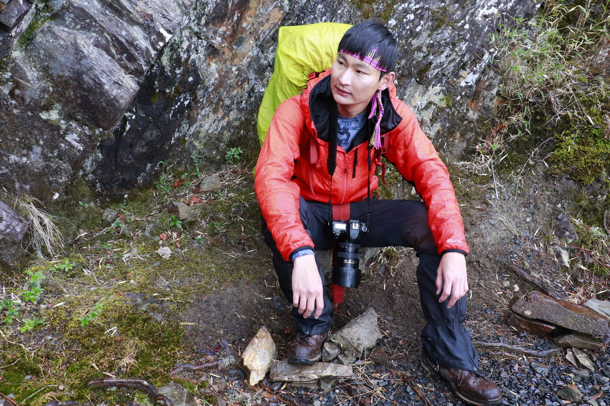
▲ 從新達山屋到桃山山屋淋了三小時雨，鞋內依然完全乾燥
至於 Renegade Lo W 的透氣表現如何呢？在這次所有的行程中，有兩個狀況可以說明答案。第一是在爬加里山回程過風美溪時，為了測試鞋子的防水性，我和 Alan 在溪裡頭玩鬧了起來，結果最後因為踢水太大力，讓水從鞋筒流了進去，導致腳踝以上都沾濕。雖然是直接進水，不過在走回登山口不到半小時的路程中，卻已經幾乎乾了。
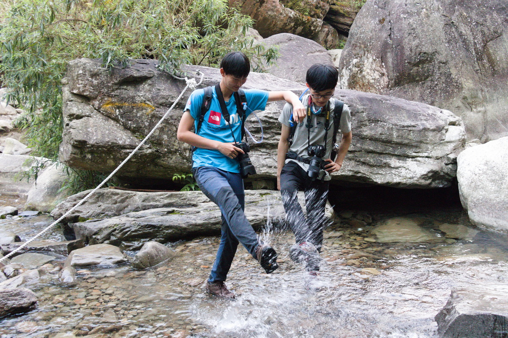
▲ 和 Alan 在風美溪裡頭踢水，說要測試鞋的防水力
第二則是在武陵農場爬升到池有山的路上，這段路因為運動量較大，使得足部產生比較多汗，進而使得腳趾頭的地方潮潮的，這種潮濕的感覺就這樣一直持續到新達山屋。
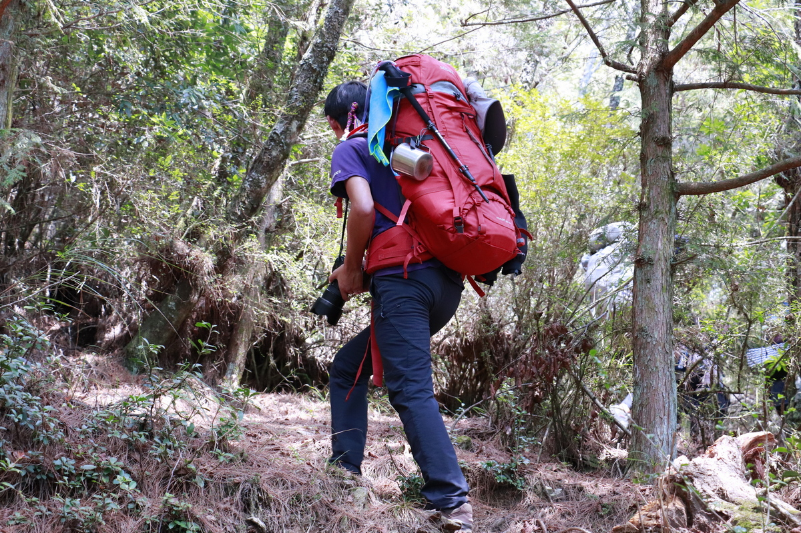
▲ 從武陵爬升到池有山陡上的途中
從這兩次經驗來看，Renegade Lo W 雖然具有不錯的透氣性，但還沒辦法稱為頂級。在第一種情境中，濕掉的部位主要是腳踝以上，由於是短筒鞋的關係，因此可以很快蒸散掉，但是在第二種情境中，就可以感受到如果水分出現在鞋子深處，並且持續產生的話，就沒辦法那麼順利保持乾燥了。這也正如前面所提的，當防水性能提高的時候，勢必會犧牲透氣的效果。
不過以上的兩個都是屬於比較極端的例子，在其他穿著 Renegade Lo W 行程中，我的腳都是完全乾燥的，表示它的透氣性具有相當的水準，只有在運動量比較大的時候，才會出現透氣不夠及時的狀況，同時這樣的狀況也是可以透過穿著適合的襪子（如美麗諾羊毛襪）來得到緩解。綜合而論，Renegade Lo W 的防水透氣性能是十分優異且值得推薦的。
【結語】
經過了不同地形與不同難易度路線的洗禮，現在我們對於 Renegade Lo W 有更深刻的認識。
Renegade Lo W 最主要的性能來自於 Vibram® 黃金大底所提供的抓地力、DynaPU® 中底所提供的穩定性與舒適性、以及 GORE-TEX 所提供的防水力與透氣度，下圖是 Renegade Lo W 在各項指標上的表現。
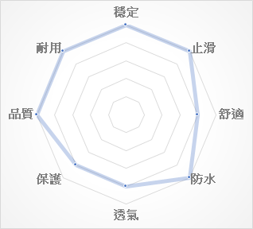
▲ LOWA Renegade Lo W 的性能分布
從這張圖中可以看到 Renegade Lo W 是一雙很全面的鞋，除了低筒的先天條件限制了它對於腳踝的防護性，當然，還是如同本文一開始所說，任何裝備都必須在適合它們的情境下使用。Renegade Lo W 能夠應付地形複雜的中級山，或是需要重裝的過夜行程，三到四天以內的百岳行程也可以考慮穿著 Renegade Lo W（須依個人能力評估），而鋪設完善的郊山步道對於 Renegade Lo W 而言反而比較不適合。
除了鞋子本身提供的穩定性，確實將裝備打包穩固是提升穩定的關鍵，面對不同的地形時，善用登山杖輔助也能夠有效增加行進的安全。
【番外篇：如何保養登山鞋】
除此之外，在登山健行回來以後進行適當清潔與保養，並且避免存放於潮濕或曝曬的環境中，都是能夠維持鞋子性能與壽命的關鍵。
由於鞋子穿完之後，鞋內都會有濕氣殘留，鬆開鞋帶、取出鞋墊並放置於通風處能夠讓鞋子內部充分乾燥。如果外表沾到輕微髒污，不要用乾布擦拭，使用美術橡皮擦即可輕鬆去除。比較大面積泥土附著的時候，則可以使用軟毛刷（我自己都是用淘汰的牙刷）搭配溫水輕輕刷拭。鞋面皮革充分乾燥也是非常重要的，濕氣和油汙都會影響其透氣性，但是千萬不可以將鞋子放在暖爐等熱源附近烘乾，這會讓皮革產生皺褶並且容易碎裂。同理，不可塗油或使用油性的保養液進行保養，而是選擇專門保養麂皮或絨面革的保養噴劑。（如果不確定保養劑是否適用，可以先在鞋身的小區域做局部測試。）
如果想進一步增進鞋子的防水透氣效能，可以在清潔完鞋面之後，趁著鞋面仍然潮濕的狀態下使用防潑水噴劑。噴塗的時候記得將鞋帶卸下，以確保每一個隱密的部位都能夠被噴劑所包覆。
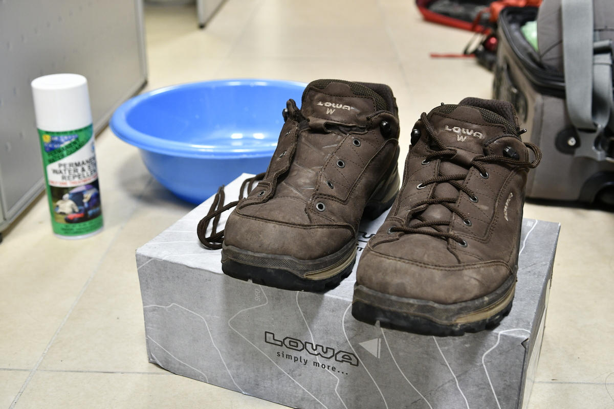
▲ 清潔保養前的鞋面髒污狀態
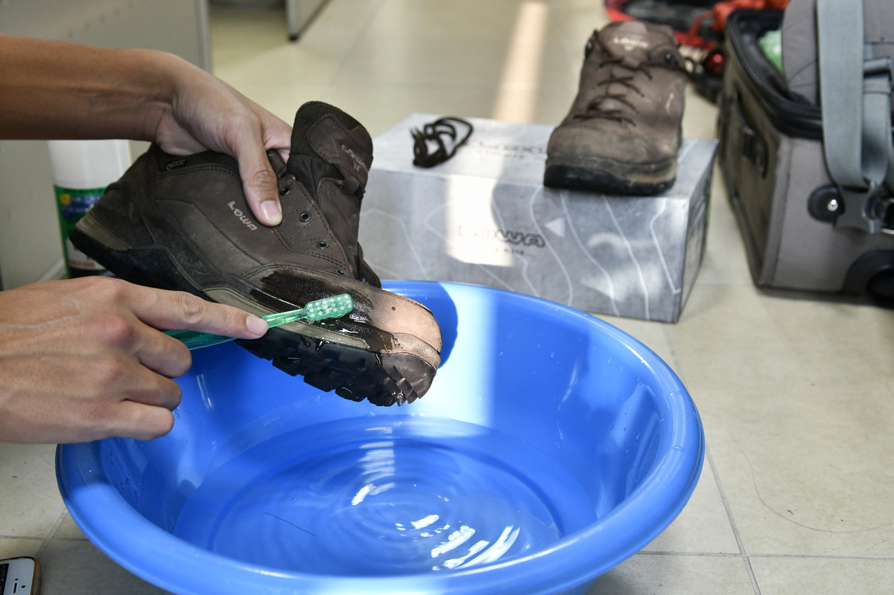
▲ 使用清水與牙刷輕輕刷去鞋面上的泥土髒污
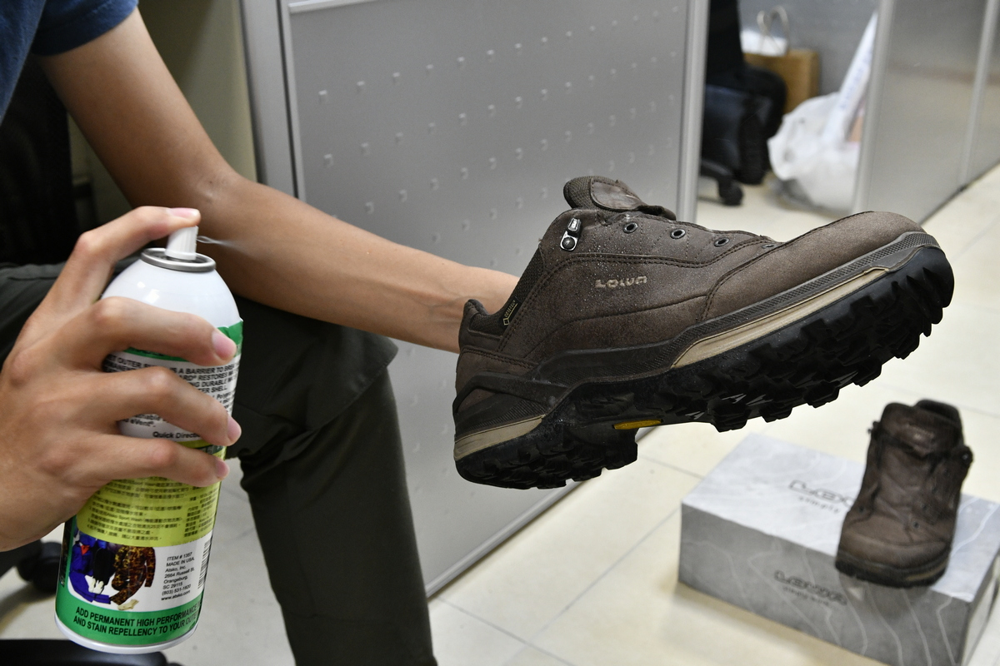
▲ 清潔完畢之後使用防水噴劑增強防水透氣效能
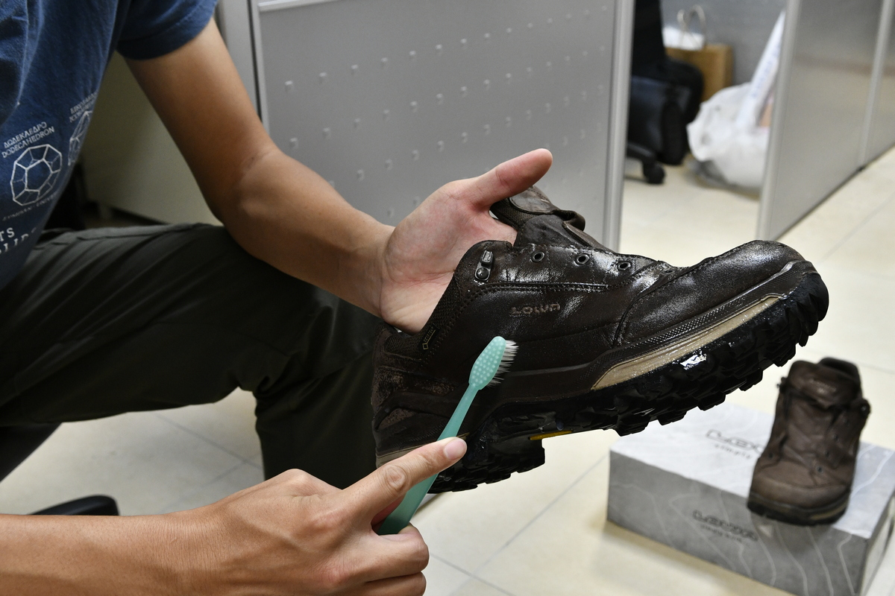
▲ 可以使用軟毛刷將防水劑均勻塗抹在鞋面各處
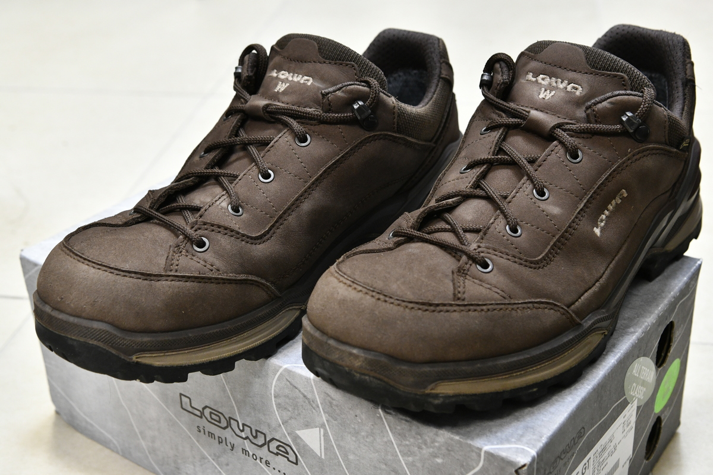
▲ 清潔保養的成果
以上保養資訊都可以在原廠鞋盒中的使用說明書找到，當然，最佳的保養方式就是常常拿出來穿就對了。而如果對 LOWA Renegade Lo W 健行鞋有興趣的話，可以點這邊進入墾趣線上商店做更深入了解。希望大家也能穿上又潮、性能又強悍的 LOWA Renegade Lo W 走進山林，創造與大自然美好的回憶。
本文同步發表於健行筆記： ● 【鞋測】上山也要潮的 LOWA RENEGADE 低筒健行鞋 更多故事請關注宇宙浪人工作室。 部分照片由 Alan 與 Sean 協助拍攝。 更多照片請參見相簿：加里山、武陵四秀。 本計劃與墾趣合作推出。